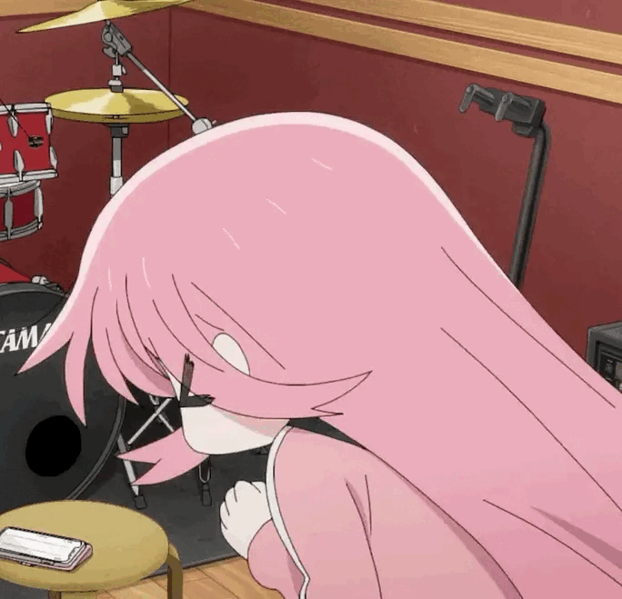

小波奇对吉他充满了热爱，她每天花费大量时间练习，希望有朝一日能够成为一名出色的吉他手。在她的演奏技巧越来越精湛的同时，她也逐渐在网络上建立了自己的粉丝群体，受到了不少人的喜爱和关注。
有一天，小波奇得知了一个消息，关于一家 LCP（液晶高分子材料）工厂，据说这家工厂使用 LCP 材料制作的吉他非常出色，声音浑厚、音质清晰、手感舒适，是音乐爱好者们的最爱。
小波奇深深被这个消息所吸引，她决定去参观这家工厂，希望能够了解到更多有关 LCP 材料吉他的知识，并且亲身体验一下这种吉他的奇妙之处。
小波奇手握着吉他，踏进了 LCP 工厂，眼前的一切让她惊叹不已。作为纽带乐队的吉他手，小波奇一直对新材料和科技有着浓厚的兴趣，这次参观工厂也是为了寻找更好的吉他材料。
在工厂里，小波奇见到了液晶高分子材料的制造过程，让她大开眼界。她深深地被这种材料的特性所吸引，甚至开始琢磨如何将它应用于吉他的制作中。
参观结束后，小波奇回到了家中，立刻拿出吉他开始尝试。她发现这种材料可以帮助吉他的声音更加清晰、明亮。经过不断的实验，小波奇成功地将液晶高分子材料应用于自己的吉他上，并在乐队的演出中展现出了惊人的表现。
（以上故事经过特殊艺术加工，不完全反映原作。如有雷同，纯属巧合）
点击此处观看《孤独摇滚！》。